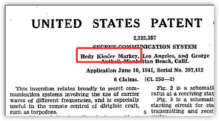

How to Learn
Charles L Flatt
2020-01-05
Contents
- From Worse to Better Learning
- Learning Differently Isn't the Same as "Learning-Different"
- Expert vs Good-Enough
- To Start
- Memory: No Learning Without It
- Getting Started: What to Choose, and Motivation
- Goals: Narrowing, When to Share, and Your Definition of Success
- Effective Learning Techniques
- Finally
From Worse to Better Learning
For many people learning seems like a chore that takes forever. They feel like Sisyphus, pushing their personal boulders up the mountain only to have them roll to earth each morning.

Is there a better way? Can science help us out? What works? What doesn't?
Research has shown there are better, more effective ways of learning. Instead of Sisyphus, we can be Benjamin Franklin or the astonishing actress/inventor Hedy Lamarr.

Learning Differently Isn't the Same as "Learning-Different"
Some people--including celebrities--have intrinsic learning difficulties. Common examples are dyslexia and ADHD. If this is you, then the information in this article might not apply. Or, it might. You really should check with a specialist, otherwise you could be working against yourself. Regardless, I hope you'll still move forward with the main point: there are better ways to learn.
Expert vs Good-Enough
Malcom Gladwell's famous book Outliers1 popularized the "10,000 hours" idea, which is that it takes 10,000 hours to learn something. Except, that's not what Gladwell's book says, and isn't what the original research demonstrated.2
Dr Anders Ericsson and colleagues wanted to answer the question, "How do people improve?" They studied top musicians, expert chess players, and competitive golfers. What they found is that the amount of time these people spent becoming experts was a large number: around 10,000 hours. But Ericcson says that isn't a magic number. The more important information he's discovered and researched is in deliberate practice, which I'll cover in another article.
It's fine to want to become an expert, but that's not what this article is about. Instead,
What does it take to become good-enough at something?
In my view, this is more useful to most people. According to Josh Kaufman, the answer is that it takes around 20 hours of quality effort to learn a new skill.3
We could get bogged down in the numbers and who's right or wrong, but let's instead keep moving.
How can I improve today?
To Start
Write down one or more things you believe you'd like to learn. You can use this list as you go through the article. At the end, see if you're further along on your learning trail.
Memory: No Learning Without It
Memory's a fascinating subject in its own right. I won't spend much time on it here, but I'd like to point something out.
If we don't remember it, it's not learned.
This can be awfully frustrating. We can certainly have learned something in the past ("I used to know some French"), but if we don't remember it now then in my opinion it's not effectively different than never having learned it.4
The good news is we can improve our learning using some of the very aspects of memory that make it unreliable. What does it mean to remember something? It isn't like finding a video point-in-time and playing from there, watching the scene unfold. Our brains aren't buckets that hold memories up to a limit when, for each that comes in, one must leave.5
Instead, imagine you're a really good artist. Your medium is chalk, and your canvas is sidewalks. One day you create a reproduction of the Mona Lisa on your front walkway. It looks great. A few days later, you check and a few lines have gaps in them, so you fill those in with the same color . . . or pretty close. A few weeks later and some colors have faded and blended, so you fix those up as well as you can. A few months later, you have a hard time figuring out what some colors were, and exactly how her nose was shaped, and the smile seems not quite right. A few years later, it doesn't look like . . . what was her name? You're not sure, but it looks like it was probably Girl with Pearl Earring, so you fill in the colors and lines to match.
Now imagine tens of thousands of chalk drawings over decades. That's what memory is really like.
We don't recall memories. We reconstruct them.6
Getting Started: What to Choose, and Motivation
Choice
Choose something you'll enjoy and that matters to you. Take your list from above and rank each item for excitement and utility. When I do this, I use a 1-4 point scale for each.
(excitement, utility)
| E | U | Learn |
|---|---|---|
| 2 | 3 | Conversational French |
| 3 | 4 | Basic anatomy |
| 3 | 1 | To ride a motorcycle |
| 4 | 2 | Typography |
| 5 | 2 | Songs for open mic nights |
Now add the rankings together and sort by the sum.
| Rank | Learn |
|---|---|
| 7 | Basic anatomy |
| 7 | Songs for open mic nights |
| 6 | Typography |
| 5 | Conversational French |
| 4 | To ride a motorcycle |
This should reveal what you'll enjoy learning the most. But before you settle on, say, basic anatomy, ask yourself, "Does this decision feel right to me?"7 If the gut check says "No," try again with the next one down. Or rerank. This will take a few minutes, but don't get paralyzed by this part; come to a reasonably quick decision.
Motivation
What will motivate you? Here are couple of things to keep in mind.
- Motivation comes from belief that effort leads to improvement. This is the growth mindset.8
- We're driven by AMP: autonomy, mastery, and purpose.9
Goals: Narrowing, When to Share, and Your Definition of Success
Narrow Your Goal To a Target
It's likely that the the thing you want to learn is pretty broad. "Learn basic anatomy" is a big chunk of knowledge, regardless of how "basic." How can you narrow this down to something you might learn in twenty hours?
- Why do I want to learn this? Assuming you had greater than zero utility for your top choice, what is that utility? For example, maybe it's "keep from hurting myself in yoga," or "understand why my back hurts," or "improve my karate practice." If understanding triceps pain is what's driving you, then learning the bones in the cranium may not be important at all.
- What's the most useful thing I could learn or do first? Getting started is a big hurdle. We'll see that small wins are important. And sometimes the thing you do first expands to become the thing you do. Example: "What does it mean to stretch my triceps muscle?"
Don't Share
You have a goal. Common wisdom says, "Share it with the world! Tell all your friends and family! Get their support, they'll pick you up and keep you going!!"
Research has shown, however, that sharing a goal--especially one tied to your identity--often reduces the chance of achieving it.
Researchers concluded that when someone notices your identity goal, that social recognition is a reward that may cause you to reduce your efforts...the students who stated they were committed to becoming lawyers had already achieved that identity in their mind thanks to the experimenter’s acknowledgment of their answers.
So if your goal is closely tied to your identity, it might be best to keep it to yourself. This way, premature praise won’t fool you into feeling like you’ve already achieved your aim.10
My own experience is similar, though opposite in one way. When I've shared with people something I plan on doing, they're often enthusiastic. I'd then get afraid of disappointing them, not put in any effort, and become depressed at what I wasn't achieving.
I think sometimes it's easier to disappoint people than to succeed.
When you start out, see if you can keep what you're doing to yourself. But if you just have to share, the research says
Only make yourself accountable to people you trust (and who don't have any skin in the game).
Define "Success"
You're going to start learning. How will you know you did it, whatever "it" is? What are your measures of success? My thoughts are:
- Choose something achievable, just like you narrowed your goal.
- Tie your early metrics to commitment and process.10
- Have a concrete metric--something literally measured--and a soft metric, something you perceive.
For example, my initial metrics I achieve might be:
- In the first two hours, I found five articles on stretching that includes the triceps.
- I feel motivated to read those articles until I find out at least what stretching is.
Here are all five tips on goals from the cited article.10
- Receiving premature praise for a goal makes follow through less likely.
- Receiving “person praise” versus “process praise” could decrease your motivation.
- If you’re a beginner, getting negative feedback could stop you.
- Accountability doesn’t always work.
- Hearing about competition might make you back off.
Effective Learning Techniques
Begin to learn! But how?
In some ways, we're at the meat of the article. Let's dig in. Below are lots of tips for improving your learning, studying and practice.
Early On
- Beginners need praise for commitment, and should seek positive feedback.
- Break it down, not only to be manageable, but also to see what's important.
- Do something small and useful first.
- Give yourself easy wins.
- Learn enough to self-correct.
- (Re)Focus on the specific goal and definition of success.
- Value process over performance. Initially, don't worry about what you're achieving. Focus on the steps.
- Commit to practicing for at least 20 hours before even thinking of quitting.
- When faced with barriers, try WOOP11 (I love this technique!)
- Do not multitask or task-switch. It makes you 40% less productive and yields 50% more mistakes.
- Make the practice hard enough that you have to work to get better. Too easy and you'll just keep doing the same easy thing. Too hard and you'll give up.
As You Advance
- Experts need praise for progress, but also should seek negative feedback.
- Make sure you can trust the feedback (this can be hard), and be sure to get process praise over person praise.12
- Learn by doing. Immersion. Use it immediately.
- Space your learning.13 Learn in short bursts (30-50 min)14, take breaks.15
- Learn before going to sleep, and
- Take a study nap - “Previous research suggested that sleeping after learning is definitely a good strategy, but now we show that sleeping between two learning sessions greatly improves such a strategy.”16
- Progressively increase the time between reviews.14
- Take notes by hand. This forces summarizing and organizing the information.14
- Self-test. Put the book down. Rereading doesn't work because it doesn't force strengthening the memory pathways. Flash cards work well.13
- Change it up. “What we found is if you practice a slightly modified version of a task you want to master, you actually learn more and faster than if you just keep practicing the exact same thing multiple times in a row.”17
- Interleave: practice something else, then come back to the primary. This boosts retention.
- Connect new ideas to prior knowledge. (Even if it's a connection you later revise.)
- Learn from multiple sources.
- Teach someone else.14
From a Teaching Point-Of-View
Here, in summary, are findings from a report commissioned by Deans for Impact, a "national nonprofit organization representing leaders in educator preparation who are committed to transforming educator preparation and elevating the teaching profession." The report is The Science of Learning 201513, a summary of "the existing research from cognitive science related to how students learn, and connect[ing] this research to its practical implications for teaching and learning." Perfect for us!
1. How do students understand new ideas?
- Connecting to their existing ideas
- Reducing the amount of information taken in at once, so that knowledge can be transferred from working to long-term memory.
- Tackling new concepts when the prerequisites have been mastered.
2. How do students learn and retain new information?
- Information often comes out of the brain the way it went in. Recommendation: Focus on the meaning of to-be-remembered material.
- "Practice is essential to learning new facts, but not all practice is equivalent."
- Space practice
- Do self tests such as flash cards. Trying to remember makes memory longer-lasting.
- Interleave practice types. "For example, if students are learning four mathematical operations, it’s more effective to interleave practice of different problem types, rather than practice just one type of problem, then another type of problem, and so on."
3. How do students solve problems?
- Determine which facts about the subject you need to store in long-term memory that will free up your working memory when problem solving.
- Seek effective feedback, which means it's
- Specific and clear;
- Focused on the task rather than the person; and
- Explanatory and focused on improvement rather than merely verifying performance.
4. How does learning transfer to new situations in or outside of the classroom?
- When transfering knowledge or skills to a new situation or problem, deeply understand the problem's context and underlying structure.
- Learn to see similar underlying structures when the surface structure is different.
5. What motivates students to learn?
- Belief that "intelligence and ability can be improved through hard work."
- Setting improvement goals rather than performance (grades/approval) goals.
- Learning to love learning (self-determined motivation) vs reward/punishment.
- Learning how to accurately self-monitor and self-correct. ("people are often unable to accurately judge their own learning and understanding")
- Remember: you're allowed to learn whatever it is you chose above. Find peers in that area who accept you.
6. What are common misconceptions about how students think and learn?
- Students have different "learning styles," i.e. visual, auditory, kinesthetic.
FALSE, people learn using all these senses, and often don't know which they're using well.18 - Humans only use 10% of their brains.
FALSE, humans use 100% of their brains each day.19 - People are right- or left-brained.
FALSE, the differences between the left and right side of the brain aren't this simplistic, and the connection between the two halves is normally strong.20 - Novices and experts can think in all the same ways.
FALSE - Cognitive development progresses via a fixed progression of age-related stages.
FALSE, cognition develops in fits and starts.
Finally
There's a lot of information above to absorb. You can't do it all at once, so . . .
What is one technique you can use today that will help you learn more effectively?
Cool. Do it!
-
Amazon.com: Outliers: The Story of Success - Malcolm Gladwell↩
-
I haven't found Ericsson's original study yet, but here are two interviews with him, plus an overview article.
-
I'm still searching for his supporting research. The first 20 hours -- how to learn anything | Josh Kaufman | TEDxCSU↩
-
I haven't researched this, so I could be wrong.↩
-
Sherlock Holmes's rationalization for why he doesn't know the Earth goes "'round the sun.". A Study in Scarlet by A. Conan Doyle.↩
-
Hidden Brain: Why our memory fails, and how to improve it : NPR↩
-
"Yes Or No?" -- A Classic And Effective Book For Decision-Making | Software Meadows↩
-
Drive: The Surprising Truth About What Motivates Us: Daniel H. Pink↩
-
The Science-Backed Reasons You Shouldn't Share Your Goals↩↩↩
-
In research, WOOP is usually examined under the scientific term "mental contrasting with implementation intentions", abbreviated “MCII”. Here's a site devoted to the technique. Home — WOOP my life↩
-
Effects of person versus process praise on student motivation: stability and change in emerging adulthood: Educational Psychology: Vol 31, No 5↩
-
Brief diversions vastly improve focus, researchers find -- ScienceDaily↩
-
Sleep makes relearning faster and longer-lasting | EurekAlert! Science News↩
-
Want to Learn a New Skill? Faster? Change Up Your Practice Sessions↩
-
Why the Left-Brain Right-Brain Myth Will Probably Never Die | Psychology Today↩
Comment for me? Send an email. I might even update the post!